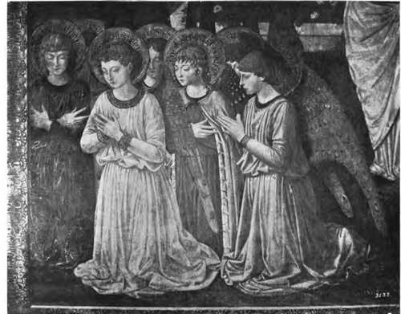

Fresco Painting. Part 2
Description
This section is from the book "Mural Painting", by F. Hamilton Jackson. Also available from Amazon: Mural Painting: -1904.
Fresco Painting. Part 2
When the plaster has been properly prepared for the painter and has been left for a short time to become sufficiently firm, the outline is traced and he begins to work. The surface should be wet enough to receive the impression of the finger, but not so wet as to be stirred up by the brush. If it dries too fast it must be sprinkled. The first tints sink in, and to get the full effect the surface has to be gone over several times. But if it be not occasionally moistened it is found that the upper colour does not unite with that underneath. Great attention to the preparation of tints on the palette is necessary, for if mixed in small quantities as the work proceeds they will appear streaky when dry. Rain-water (which has not passed through an iron pipe) boiled or distilled water must be used. After the painter has laid in his general colour he should wait half an hour or longer, according as the colour sets, before proceeding to more delicate modelling. In the first operations warm or powerful tints should be avoided, as these can be added with better effect as the work advances. After the second painting and another pause the work is finished with thin glazings * and washings. If the touches of the brush remain wet on the surface, and are no longer sucked in instantaneously, the painter must cease to work, for the colour no longer unites with the plaster, and the touches will show as chalky spots. As this moment approaches the absorbing power increases, the wet brush is sucked dry by mere contact with the wall and the operation of painting becomes more difficult. A letter from a Mr. A. Wilson, written in 1843, describes the process used by Genoese painters in fresco at that time. The artist had two pots, one of lime, and one of pale flesh colour. On a large slate table he had terre verte, smalt, vermilion, yellow ochre, Roman ochre, darker ochre, Venetian red, umber, burnt umber, and black, rather stiff, about one or two ounces of each ground in water. Near him lay a lump of umber; he tried his colours on this, which instantly absorbed the water. He was painting a head of the Virgin, and began with a pale yellow for the glory, then laid in head and neck with pale flesh colour, and the masses of drapery round the head and shoulders with a middle tint, with brown and black in the shadows. Next with terre verte he modelled in the features, while he also put in the cool tints of the face with pale umber and white, using the same tint for the hair and the folds of the white veil. All these colours were quite thin; he touched the intonaco tenderly and allowed ten minutes to elapse before touching the same place a second time. He now worked from his coloured study, modelling the features, putting colour in the cheeks and mouth, and Fresco by Benozzo Gozzoli in the Chapel of the Palazzo Riccardi, Florence shading the hair and drapery, deepening always with the same colours. Having worked for half an hour he halted for ten minutes while he mixed darker tints, and then began finishing, loading the lights and using the colours much stiffer; he also softened with a brush dipped in water. Another rest of ten minutes; but he had nearly finished the head and shoulders now and only had to put in some light touches in the hair, heighten the lights generally, touch in the darks and throw a little white into the halo round the head. He had done this in about an hour and a half with four rests to allow the wet to be absorbed into the plaster. The Munich men have an expedient to arrest the drying if the painter has to be absent for some time. A board is padded on one side, the cushion being covered with waxed cloth; a wet piece of fine linen is then spread over the fresh plaster and painting and pressed against the surface of the wall by the cushioned board buttressed by a pole from the ground. But any such expedient must be of slight utility, since, as has been said, fresco does not depend for its durability upon the thorough drying of the plaster, but upon the crystallisation of the carbonate of lime on the surface of the wall, forming "a fine transparent enamel which the colouring matter thoroughly penetrates, invests, and becomes itself so fixed." The failures which attended some of the earlier attempts at reviving the art of fresco painting in England were partly due to the painters not realising the necessity of using freshly made plaster nor of ceasing to work when crystallisation had commenced on the surface. Paillot de Montabert also lays stress on the necessity for strengthening the tints by going over them again with touches of the same colour to correct the weakening which takes place on their absorption into the lime. He says retouching may be done by hatching the first painting over with a stronger tint in harmony with that below. " These hatchings freely made are softened by the intervening air and united to the general effect. Tints may be softened into each other directly after being applied either with soft wet brushes or with the fingers, a process used most in heads and extremities, especially when the plaster has been allowed to harden by leaving it a little too long".
AIM)RING ANGELS.
When the day's work is done the superfluous plaster is cut away, and care must be taken to make the joins at the edges of forms so that they may not attract attention. The next day the surface of the plaster already painted has to be wetted, especially at the edges, which must be done with a brush; so that it is best to begin at the top of the painting, if possible, and thus avoid soiling from the water running down over the work already completed. The changes undergone by fresco in drying are rather alarming to the inexperienced painter; within two or three months various changes succeed each other till the picture almost entirely disappears. Michel Angelo was so much upset by these changes that he went to the pope and asked to be allowed to resign the work on the Sistine ceiling. He was referred to San Gallo, who explained the matter to him.
Continue to: